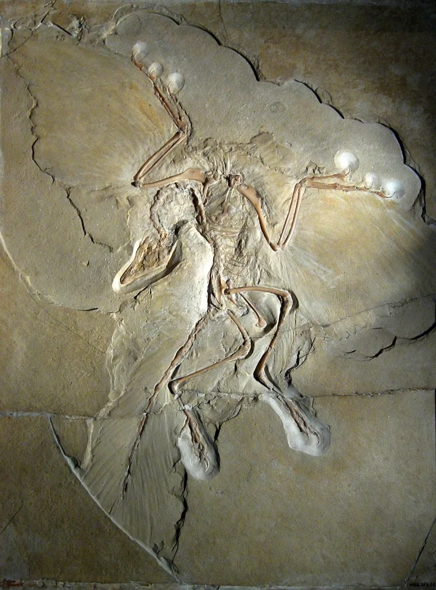

LDS scholars have a real answer here. Say so before your friend does.
The First Presidency published The Origin of Man. It declared Adam "the first man of all men" and dismissed human evolution as "theories of men." The 1925 restatement quietly softened that.
For decades, in public. Joseph Fielding Smith and Bruce R.
McConkie condemned evolution as heresy, incompatible with the Fall. James E.
Talmage and B. H.
Roberts accepted life before Adam. All of them held the same office.
The church's official position is that it has no official position. BYU teaches evolution as settled science.
No death before the Fall — 2 Nephi 2:22 and Alma 12:23-24. Moses 3:7 calls Adam "the first flesh upon the earth." D&C 77:6-7 gives the earth a temporal history of 7,000 years.
The church no longer defends those claims. It has never corrected them either.
Genuinely arguable, and do not overstate it. Never say the church banned evolution; it never quite did, and the neutral framing has real support.
The solid core is narrower. Apostles taught flatly contradictory answers to a factual question for seventy years, all claiming prophetic authority.
The scientists settled it, and the church followed. Use it as corroboration, not as your lead.
"Which apostle was speaking as a prophet — Talmage or Joseph Fielding Smith?"

The 1909 letter was about our divine origin. It was not about the science.
The church holds that the 1909 statement was about where humans come from. It affirmed a divine origin. It did not pick a mechanism in biology.
The 1910 and 1925 materials show openness.
The church takes no official position on evolution itself. It leaves science to science.
BYU's evolution packet, approved by its board, reflects that neutral stance.
Arguable. Never say they banned it, but their apostles split for seventy years.
Do not claim that the church banned evolution. It never quite did, and the neutrality framing has real support, in the 1910 Christmas message and in the BYU packet.
The strong core is narrower and solid. Apostles taught flatly opposite positions on a factual question for seventy years, while all claiming prophetic authority. Joseph Fielding Smith and Bruce R. McConkie on one side. James E. Talmage and B. H. Roberts on the other.
And the no-death-before-the-Fall scripture stands uncorrected while being quietly abandoned. See 2 Nephi 2:22, Alma 12:23-24, Moses 3:7 and D&C 77:6-7.
Use it as a case study in how prophets settle empirical questions. They did not. The scientists did, and the church followed. Corroboration, not your lead.